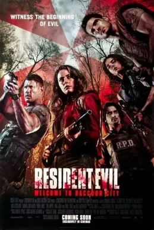

The genetics
This reboot of the Resident Evil film series, faithful to the first two video games, centres on the familiar picture of corporate bioweapon research. The pharmaceutical giant Umbrella has experimented on orphans in a secret laboratory under Raccoon City, and its research leaks into the town, turning the population into bleeding, violent zombies. Its scientist Dr. William Birkin has developed the G-virus, his life's work, which a rival party sends Wesker to steal; cornered, Birkin injects himself and mutates into a monster. The company responds to the outbreak by sealing the city, shooting those who try to leave and finally destroying it while reporting no survivors. Scientists and their employer are thus villains whose experiments on children and engineered viruses cause a catastrophe. The film does not dwell on the science, and the agents behave like no real virus.
How genetics is portrayed
- Overall portrayal of genetics
- negative Viral and genetic research is a corporate crime that ends in mass death and a cover-up.
- Outcome of the genetic intervention
- negative The experiments disfigure children, the outbreak turns the town into zombies, and Birkin's G-virus makes him a monster; the city is destroyed.
- Dr. William Birkin
- villain Aim: military, curiosity (negative). Birkin experiments on orphans and develops the G-virus within Umbrella's bioweapon research; to save his life's work he injects himself, becomes a monster and is killed by Leon.
- Umbrella Corporation
- villain Aim: military, commercial (negative). Umbrella runs the secret laboratory and child experiments behind the outbreak, then shoots fleeing civilians, destroys the city and covers up the survivors.
- Albert Wesker
- villain Aim: commercial (negative). Wesker betrays his team to steal Birkin's virus for an unidentified party and kills Birkin's wife in the attempt.
The story
In the 1980s, Claire Redfield and her brother Chris live in the Raccoon City orphanage, where Claire befriends Lisa Trevor, a disfigured girl on whom Umbrella scientist Dr. William Birkin experiments. In 1998 Claire returns to warn Chris about Umbrella's experiments just as people begin to bleed, lose their hair and turn violent. Chris, Jill Valentine and Albert Wesker's police team are sent to the Spencer Mansion, where they find zombies devouring the missing Bravo team; Wesker is secretly working for another party to steal Birkin's virus. Claire and rookie officer Leon Kennedy flee the overrun police station, and Lisa leads them to a hidden laboratory where Umbrella experimented on children. Wesker kills Birkin's wife, Birkin injects himself with his G-virus and mutates, and Umbrella destroys the city. Leon kills the mutated Birkin, and the survivors escape with Birkin's daughter Sherry.
Sources
- https://en.wikipedia.org/wiki/Resident_Evil%3A_Welcome_to_Raccoon_City
- https://es.wikipedia.org/wiki/Resident_Evil%3A_bienvenidos_a_Raccoon_City
- https://de.wikipedia.org/wiki/Resident_Evil%3A_Welcome_to_Raccoon_City
- https://residentevil.fandom.com/wiki/Resident_Evil:_Welcome_to_Raccoon_City
- https://video-games.fandom.com/wiki/Resident_Evil:_Welcome_to_Raccoon_City